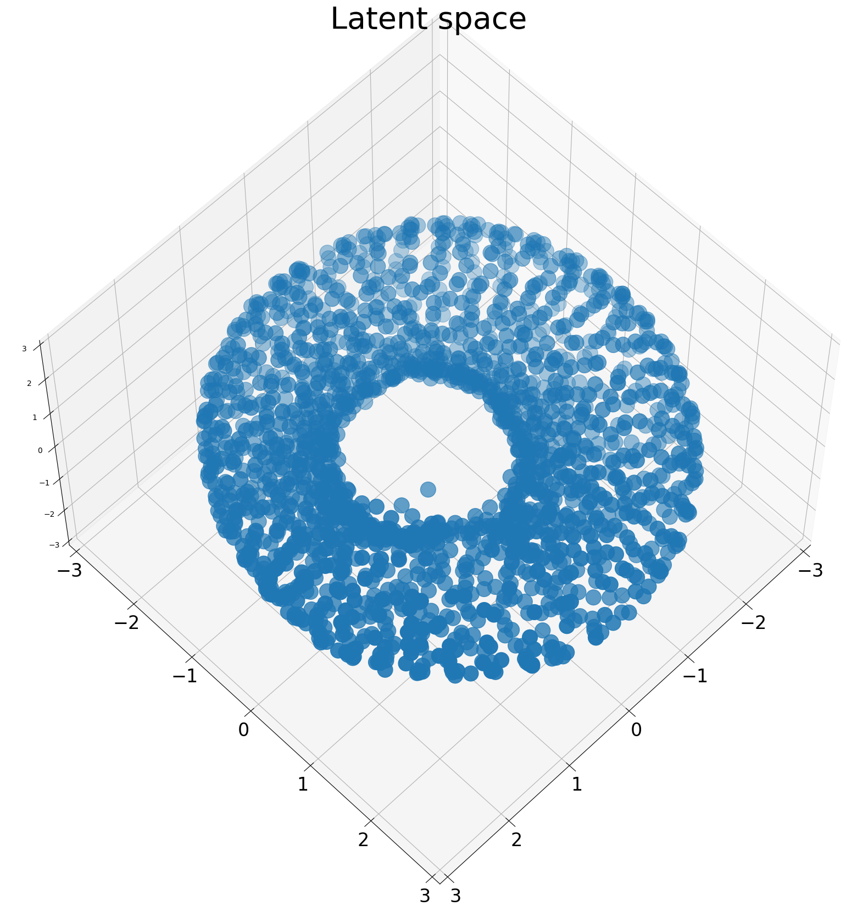

Notebook source code: notebooks/old_curvature/30_reparameterization_invariant_torus.ipynb
Setup#
In [16]:
import os
import subprocess
import sys
import warnings
warnings.filterwarnings("ignore")
gitroot_path = subprocess.check_output(
["git", "rev-parse", "--show-toplevel"], universal_newlines=True
)
os.chdir(os.path.join(gitroot_path[:-1], "neurometry"))
print("Working directory: ", os.getcwd())
sys_dir = os.path.dirname(os.getcwd())
sys.path.append(sys_dir)
print("Directory added to path: ", sys_dir)
sys.path.append(os.getcwd())
print("Directory added to path: ", os.getcwd())
Working directory: /home/facosta/neurometry/neurometry
Directory added to path: /home/facosta/neurometry
Directory added to path: /home/facosta/neurometry/neurometry
Imports#
In [3]:
%load_ext autoreload
%autoreload 2
In [4]:
import json
import default_config as config
import matplotlib.pyplot as plt
import numpy as np
import pandas as pd
import torch
import viz
import neurometry.datasets.utils as utils
INFO:root:Using pytorch backend
In [ ]:
# run_ids = "94ad08fb", "cf61cdd2", "cd554607", "0d8c0444"
# 97e13881
Get config on run of interest#
Specify run ID#
In [53]:
run_id = "17f3257f"
Load run config#
In [54]:
CONFIG_DIR = os.path.join(os.getcwd(), "results", "configs")
print(f"Config in directory: {CONFIG_DIR}:")
for config_file in os.listdir(CONFIG_DIR):
if run_id in config_file:
print(config_file)
run_id_config_file = config_file
with open(
os.path.join(CONFIG_DIR, run_id_config_file),
) as f:
config_dict = json.load(f)
# Convert a dict into an object where attributes are accessed with "."
# This is needed for the utils.load() function
class AttrDict(dict):
def __init__(self, *args, **kwargs):
super().__init__(*args, **kwargs)
self.__dict__ = self
config = AttrDict(config_dict)
Config in directory: /home/facosta/neurometry/neurometry/results/configs:
run_17f3257f_t2_synthetic_noise_var_0.001_embedding_dim_3.json
Get data, model, curvature profile#
Load data#
In [55]:
dataset_torch, labels, train_loader, test_loader = utils.load(config)
dataset_torch = dataset_torch.to(config.device)
_, data_dim = dataset_torch.shape
Dataset shape: torch.Size([1936, 3]).
Load model#
In [56]:
trained_models_dir = os.path.join(os.getcwd() + "/results/trained_models")
model_path = os.path.join(trained_models_dir, f"{config.results_prefix}_model.pt")
model = torch.load(model_path)
Get learned immersion \(f\) and neural metric#
In [57]:
import evaluate
import geomstats.backend as gs
from geomstats.geometry.pullback_metric import PullbackMetric
learned_immersion = evaluate.get_learned_immersion(model, config)
neural_metric = PullbackMetric(
dim=2, embedding_dim=config.data_dim, immersion=learned_immersion
)
In [43]:
viz.plot_recon_per_positional_angle(model, dataset_torch, labels, config);

In [40]:
viz.plot_latent_space(model, dataset_torch, labels, config);

Load learned curvature profile#
In [58]:
CURVATURE_PROFILES_DIR = os.path.join(os.getcwd(), "results", "curvature_profiles")
curv_norm_learned_profile = pd.read_csv(
os.path.join(
CURVATURE_PROFILES_DIR, config.results_prefix + "_curv_norm_learned_profile.csv"
)
)
curv_norm_learned_profile
Out [58]:
| Unnamed: 0 | z_grid_theta | z_grid_phi | geodesic_dist | curv_norm_learned | |
|---|---|---|---|---|---|
| 0 | 0 | 0.000000 | 0.000000 | 0.0 | 0.253112 |
| 1 | 1 | 0.000000 | 0.169816 | 0.0 | 0.370395 |
| 2 | 2 | 0.000000 | 0.339632 | 0.0 | 0.483677 |
| 3 | 3 | 0.000000 | 0.509447 | 0.0 | 0.610518 |
| 4 | 4 | 0.000000 | 0.679263 | 0.0 | 0.668534 |
| ... | ... | ... | ... | ... | ... |
| 1439 | 1439 | 6.283185 | 5.603922 | 0.0 | 0.165213 |
| 1440 | 1440 | 6.283185 | 5.773738 | 0.0 | 0.629399 |
| 1441 | 1441 | 6.283185 | 5.943554 | 0.0 | 0.477611 |
| 1442 | 1442 | 6.283185 | 6.113369 | 0.0 | 0.188216 |
| 1443 | 1443 | 6.283185 | 6.283185 | 0.0 | 0.253112 |
1444 rows × 5 columns
Towards parameterization invariance#
Compute true curvature#
In [ ]:
true_immersion = evaluate.get_true_immersion(config)
(
z_grid_true,
geodesic_dist_true,
curv_true,
curv_norms_true,
) = evaluate.compute_curvature_true(config, 100)
Compute learned curvature#
In [59]:
(
z_grid_learned,
geodesic_dists_learned,
curv_learned,
curv_norms_learned,
) = evaluate.compute_curvature_learned(
model, config, embedding_dim=3, n_grid_points=100
)
---------------------------------------------------------------------------
_LinAlgError Traceback (most recent call last)
Cell In[59], line 6
1 (
2 z_grid_learned,
3 geodesic_dists_learned,
4 curv_learned,
5 curv_norms_learned,
----> 6 ) = evaluate.compute_curvature_learned(
7 model, config, embedding_dim=3, n_grid_points=100
8 )
File ~/neurometry/neurometry/evaluate.py:152, in compute_curvature_learned(model, config, embedding_dim, n_grid_points)
150 immersion = get_learned_immersion(model, config)
151 start_time = time.time()
--> 152 geodesic_dist, curv, curv_norm = _compute_curvature(
153 z_grid=z_grid,
154 immersion=immersion,
155 dim=config.manifold_dim,
156 embedding_dim=embedding_dim,
157 )
158 end_time = time.time()
159 print("Computation time: " + "%.3f" % (end_time - start_time) + " seconds.")
File ~/neurometry/neurometry/evaluate.py:139, in _compute_curvature(z_grid, immersion, dim, embedding_dim)
132 # Note: these lines are commented out (see PR description)
133 # as it makes the computations extremely long.
134 # Recommendation: compute these offline in a notebook
135 # if i_z > 1:
136 # geodesic_dist[i_z] = neural_metric.dist(z0, z)
137 else:
138 geodesic_dist = gs.zeros(len(z_grid))
--> 139 curv = neural_metric.mean_curvature_vector(z_grid)
141 curv_norm = torch.linalg.norm(curv, dim=1, keepdim=True)
142 curv_norm = gs.array([norm.item() for norm in curv_norm])
File ~/miniconda3/envs/neurometry/lib/python3.8/site-packages/geomstats/geometry/pullback_metric.py:280, in PullbackMetric.mean_curvature_vector(self, base_point)
278 mean_curvature = []
279 for point in base_point:
--> 280 second_fund_form = self.second_fundamental_form(point)
281 cometric = self.cometric_matrix(point)
282 mean_curvature.append(gs.einsum("ij,aij->a", cometric, second_fund_form))
File ~/miniconda3/envs/neurometry/lib/python3.8/site-packages/geomstats/geometry/pullback_metric.py:228, in PullbackMetric.second_fundamental_form(self, base_point)
226 second_fundamental_forms = []
227 for point in base_point:
--> 228 christoffels = self.christoffels(point)
230 jacobian_ai = self.jacobian_immersion(point)
231 if self.dim == 1 and jacobian_ai.ndim > 2:
File ~/miniconda3/envs/neurometry/lib/python3.8/site-packages/geomstats/geometry/riemannian_metric.py:177, in RiemannianMetric.christoffels(self, base_point)
152 def christoffels(self, base_point):
153 r"""Compute Christoffel symbols of the Levi-Civita connection.
154
155 The Koszul formula defining the Levi-Civita connection gives the
(...)
175 Christoffel symbols, where the contravariant index is first.
176 """
--> 177 cometric_mat_at_point = self.cometric_matrix(base_point)
178 metric_derivative_at_point = self.inner_product_derivative_matrix(base_point)
180 term_1 = gs.einsum(
181 "...lk,...jli->...kij", cometric_mat_at_point, metric_derivative_at_point
182 )
File ~/miniconda3/envs/neurometry/lib/python3.8/site-packages/geomstats/geometry/riemannian_metric.py:127, in RiemannianMetric.cometric_matrix(self, base_point)
110 """Inner co-product matrix at the cotangent space at a base point.
111
112 This represents the cometric matrix, i.e. the inverse of the
(...)
124 Inverse of inner-product matrix.
125 """
126 metric_matrix = self.metric_matrix(base_point)
--> 127 cometric_matrix = gs.linalg.inv(metric_matrix)
128 return cometric_matrix
_LinAlgError: linalg.inv: The diagonal element 2 is zero, the inversion could not be completed because the input matrix is singular.
Parallel computations of geodesic distances#
In [ ]:
import copy
import logging
import time
from joblib import Parallel, delayed
model.to("cuda:0")
z_grid_theta = torch.tensor(
curv_norm_learned_profile["z_grid_theta"].values
) # = pi # ??
z_grid_phi = torch.tensor(curv_norm_learned_profile["z_grid_phi"].values) # ??
z0 = gs.array([z_grid_theta[0], z_grid_phi[0]])
# assert z0.shape == (2, 1), z0.shape
# TODO (use logging to actually print and know which iterations we are on)
def _geodesic_dist(i_z_phi, z_phi, grid_interval_phi):
if i_z_phi == 0:
return (0, torch.tensor(0.0))
# Parallelize on gpus: is that line really helping,
# i.e. is the copy taking less time than the computation? if not, don't bother
# also: does it change anything since neural metric has already been computed and uses the old version of model?
copy.deepcopy(model).to(f"cuda:{i_z_phi % 9}")
# z_phi = torch.unsqueeze(z_phi, dim=0)
z_phi_previous = z_grid_phi[i_z_phi - grid_interval_phi]
start = time.time()
# Tricks to speed up this computation:
# 1. Compute with less number of steps for the integration of the geodesic eqn
# 2. Compute distance between neighboring z's
z = gs.array([z_phi, z_grid_theta[0]])
z = torch.unsqueeze(z, dim=0)
assert z.shape == (1, 2), z.shape
z_previous = gs.array([z_phi_previous, z_grid_theta[0]])
z_previous = torch.unsqueeze(z_previous, dim=0)
assert z_previous.shape == (1, 2), z_previous.shape
dist = neural_metric.dist(z_previous, z, n_steps=7)
duration = time.time() - start
logging.info(f"Time (it: {i_z_phi}): {duration:.3f}")
return (i_z_phi, dist)
# To try this code , use z_grid[:5] to run on smaller batch
# Currently, the z_grid is too big (~800) --> go to 100
# Note: each distance computation takes ~5s.
grid_interval_phi = 1
res = Parallel(n_jobs=-1)(
delayed(_geodesic_dist)(i_z_phi, z_phi, grid_interval_phi)
for i_z_phi, z_phi in enumerate(z_grid_phi)
if i_z_phi % grid_interval_phi == 0
)
INFO: Using pytorch backend
INFO: Using pytorch backend
INFO: Using pytorch backend
INFO: Using pytorch backend
INFO: Using pytorch backend
INFO: Using pytorch backend
INFO: Using pytorch backend
INFO: Using pytorch backend
INFO: Using pytorch backend
INFO: Using pytorch backend
INFO: Using pytorch backend
INFO: Using pytorch backend
INFO: Using pytorch backend
INFO: Using pytorch backend
INFO: Using pytorch backend
INFO: Using pytorch backend
INFO: Using pytorch backend
INFO: Using pytorch backend
INFO: Using pytorch backend
INFO: Using pytorch backend
INFO: Using pytorch backend
INFO: Using pytorch backend
INFO: Using pytorch backend
INFO: Using pytorch backend
INFO: Using pytorch backend
INFO: Using pytorch backend
INFO: Using pytorch backend
INFO: Using pytorch backend
INFO: Using pytorch backend
INFO: Using pytorch backend
INFO: Using pytorch backend
INFO: Using pytorch backend
In [23]:
geodesic_dists = torch.zeros(len(res))
curv_norms = torch.zeros(len(res))
for i_z, dist in res:
geodesic_dists[i_z] = dist
curv_norms[i_z] = curv_norm_learned_profile["curv_norm_learned"].values[i_z]
print(geodesic_dists[:10])
print(curv_norms[:10])
print(1 / curv_norms[:10])
print(len(geodesic_dists))
---------------------------------------------------------------------------
NameError Traceback (most recent call last)
Cell In[23], line 1
----> 1 geodesic_dists = torch.zeros(len(res))
2 curv_norms = torch.zeros(len(res))
3 for i_z, dist in res:
NameError: name 'res' is not defined
In [ ]:
cumul_geodesic_dists = torch.cumsum(geodesic_dists, dim=0)
cumul_geodesic_dists[:10]
print(cumul_geodesic_dists.max())
In [8]:
import subprocess
git_branch = subprocess.check_output(["git", "branch"], universal_newlines=True)
In [ ]:
closed_geodesic_dists = torch.concat(
[cumul_geodesic_dists, torch.tensor([cumul_geodesic_dists[0]])]
)
closed_curv_norms = torch.concat([curv_norms, torch.tensor([curv_norms[0]])])
In [ ]:
cmaps = ["viridis"]
fig, ax = plt.subplots(
nrows=1, ncols=1, figsize=(6, 6), subplot_kw={"projection": "polar"}
)
i_zs = [i_z for i_z, _ in res]
subgrid_profile = curv_norm_learned_profile.take(i_zs)
ax.plot(closed_geodesic_dists, closed_curv_norms, c="black")
# ax.set_rticks([0.5, 1, 1.5, 2]) # Less radial ticks
ax.set_rlabel_position(-22.5) # Move radial labels away from plotted line
ax.grid(True)
ax.set_title("Color: " + stat_velocities, va="bottom")
fig.tight_layout()
# import os
# print(os.getcwd())
fig.savefig(f"notebooks/figures/run_{run_id}_invariant_manifold.svg")
Obtain true and learned “shape” of curvature profile#
In [1]:
# z_grid_learned, cumul_geodesic_dists_learned, curv_norms_learned = remove_outliers(
# z_grid_learned, cumul_geodesic_dists_learned, curv_norms_learned
# )
In [ ]:
import scipy
# function to find best alignment
def get_cross_corr(signal1, signal2):
s1 = np.squeeze(signal1)
mean_s1 = np.mean(s1)
s1 = s1 - mean_s1
s2 = np.squeeze(signal2)
mean_s2 = np.mean(s2)
s2 = s2 - mean_s2
correlation = np.correlate(s1, s2, mode="same")
lags = scipy.signal.correlation_lags(s1.size, s2.size, mode="same")
lag = lags[np.argmax(correlation)]
s1 = np.roll(s1, -lag)
s1 += mean_s1
return s1, correlation
Quotient out global scaling#
In [ ]:
scaling_factor = 2 * np.pi / np.max(cumul_geodesic_dists_learned)
rescaled_curv_norms_learned = curv_norms_learned * scaling_factor
rescaled_cumul_geodesic_dists_learned = cumul_geodesic_dists_learned * scaling_factor
Quotient out global rotation#
In [ ]:
# ensures that the true profile and the learned profile are sampled at the same points
curv_norms_true_interp = np.interp(
rescaled_cumul_geodesic_dists_learned, z_grid_true, curv_norms_true
)
# computes cross-correlation between true and learned curvature profiles, returns offset of best alignment
aligned_curv_norms_learned, correlation = get_cross_corr(
rescaled_curv_norms_learned, curv_norms_true_interp
)
Plot curvature shapes#
In [ ]:
smoothing = False
fig = plt.figure(figsize=(15, 5))
ax_no_geodesic = fig.add_subplot(121)
curv_norms_learned, _ = get_cross_corr(curv_norms_learned, curv_norms_true)
ax_no_geodesic.plot(
z_grid_true, curv_norms_true, label="True", dashes=[5, 2], linewidth=3
)
ax_no_geodesic.plot(z_grid_learned, curv_norms_learned, label="Learned", linewidth=3)
ax_no_geodesic.legend()
ax_no_geodesic.set_xlabel("Angle")
ax_no_geodesic.set_ylabel("Magnitude of mean curvature")
ax_no_geodesic.set_title("Learned curvature profile")
ax_geodesic = fig.add_subplot(122)
if smoothing:
aligned_curv_norms_learned = scipy.signal.savgol_filter(
aligned_curv_norms_learned, window_length=15, polyorder=7
)
ax_geodesic.plot(
rescaled_cumul_geodesic_dists_learned,
curv_norms_true_interp,
label="True",
dashes=[5, 2],
linewidth=3,
)
ax_geodesic.plot(
rescaled_cumul_geodesic_dists_learned,
aligned_curv_norms_learned,
label="Learned",
linewidth=3,
)
ax_geodesic.legend()
ax_geodesic.set_xlabel("Angle")
ax_geodesic.set_ylabel("Magnitude of mean curvature")
ax_geodesic.set_title("Parameterization-invariant learned curvature profile")
CURVATURE_SHAPES_DIR = os.path.join(os.getcwd(), "results", "curvature_shapes")
plt.savefig(
os.path.join(CURVATURE_SHAPES_DIR, f"param_inv_s1_run_id_{run_id}_profile.png")
)
plt.savefig(
os.path.join(CURVATURE_SHAPES_DIR, f"param_inv_s1_run_id_{run_id}_profile.svg")
)
Plot curvature shapes, polar#
In [ ]:
error_no_geodesic = evaluate._compute_curvature_error_s1(
z_grid_true, curv_norms_learned, curv_norms_true
)
error_geodesic = evaluate._compute_curvature_error_s1(
rescaled_cumul_geodesic_dists_learned,
aligned_curv_norms_learned,
curv_norms_true_interp,
)
fig_polar = plt.figure(figsize=(15, 15))
ax_polar_no_geodesic = fig_polar.add_subplot(121, projection="polar")
ax_polar_no_geodesic.plot(
z_grid_true,
0.5 + curv_norms_true,
label="True",
dashes=[5, 2],
linewidth=3,
color="dodgerblue",
)
ax_polar_no_geodesic.plot(
z_grid_learned,
0.5 + curv_norms_learned,
label="Learned",
linewidth=3,
color="orangered",
)
ax_polar_no_geodesic.set_title(
"Learned curvature profile. Error = " + f"{error_no_geodesic:.3f}"
)
ax_polar_no_geodesic.set_rticks([1])
ax_polar_no_geodesic.legend(
bbox_to_anchor=(1.05, 1), loc="upper right", borderaxespad=0
)
ax_polar_geodesic = fig_polar.add_subplot(122, projection="polar")
ax_polar_geodesic.plot(
rescaled_cumul_geodesic_dists_learned,
0.5 + curv_norms_true_interp,
label="True",
dashes=[5, 2],
linewidth=3,
color="dodgerblue",
)
ax_polar_geodesic.plot(
rescaled_cumul_geodesic_dists_learned,
0.5 + aligned_curv_norms_learned,
label="Learned",
linewidth=3,
color="limegreen",
)
ax_polar_geodesic.set_title(
"Parameterization-invariant learned curvature profile. Error = "
+ f"{error_geodesic:.3f}"
)
ax_polar_geodesic.set_rticks([1])
ax_polar_geodesic.legend(bbox_to_anchor=(1.05, 1), loc="upper right", borderaxespad=0)
plt.savefig(
os.path.join(
CURVATURE_SHAPES_DIR, f"param_inv_s1_run_id_{run_id}_profile_polar.png"
)
)
plt.savefig(
os.path.join(
CURVATURE_SHAPES_DIR, f"param_inv_s1_run_id_{run_id}_profile_polar.svg"
)
)